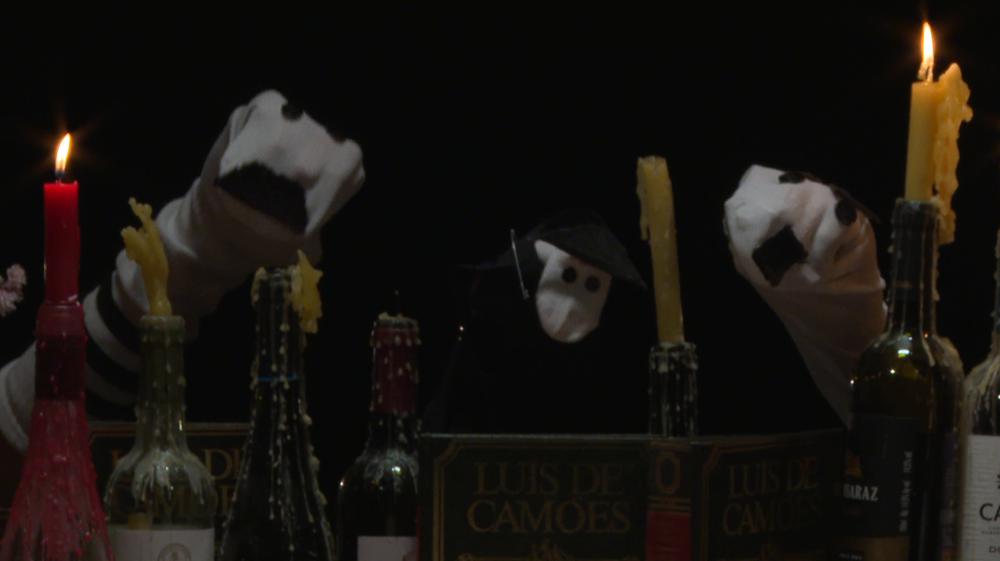
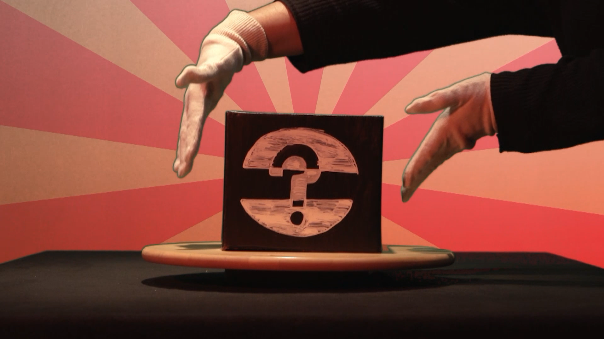
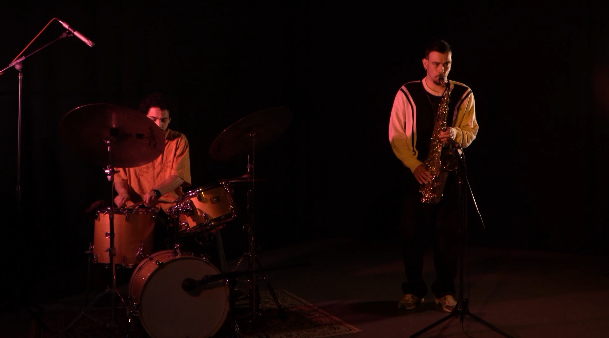
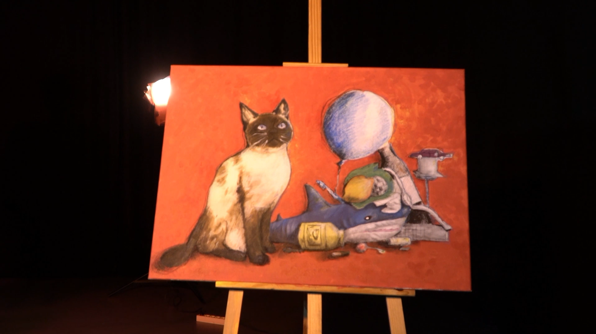
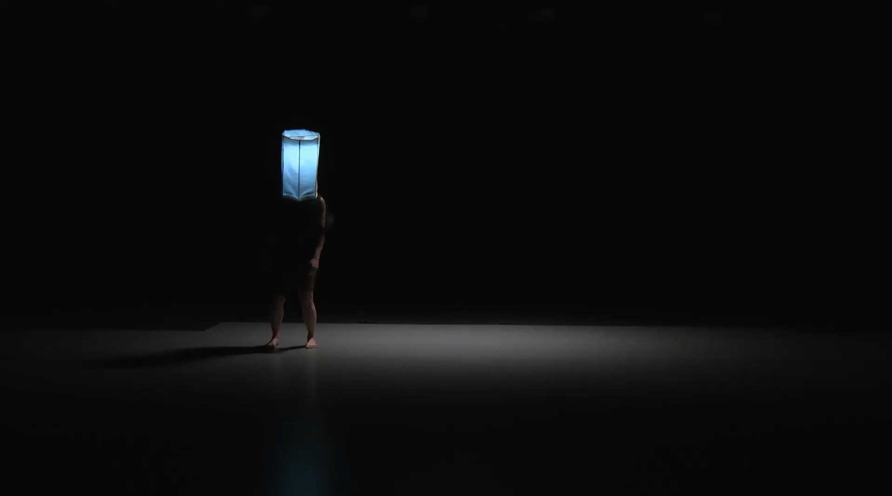
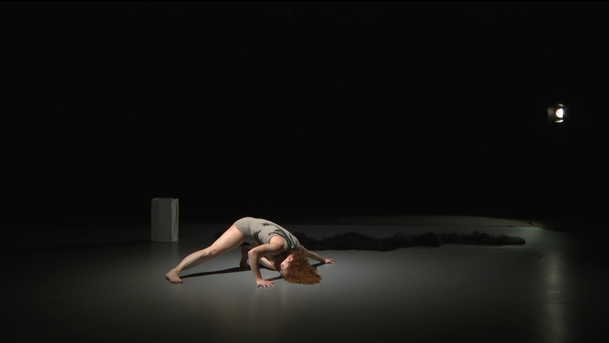
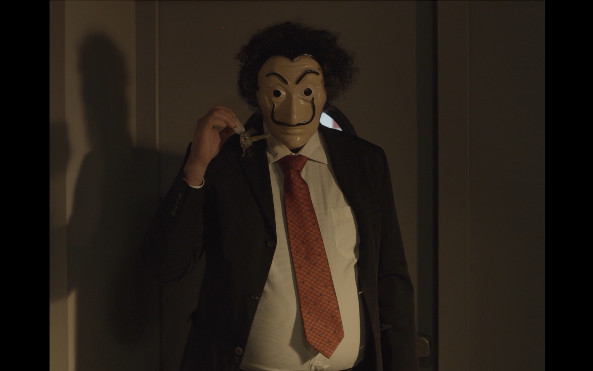
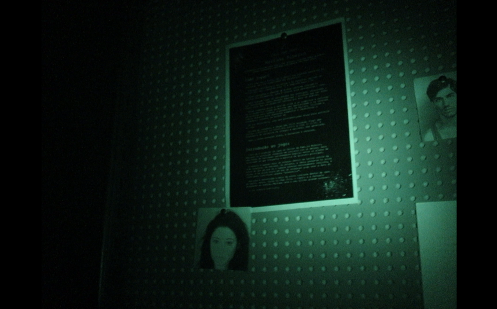

Detailed Showreel | Last Update: 10th of November, 2026


Beyond the Grave is a talkshow centered around the idea of talking to the dead.
In this episode, the dictators Stalin and Hitler are brought on to discuss modern events before being interrupted by Napoleon.
The episode ends with Ms. Graves fainting before cutting to a Burgle Wurgle ad.
Jazz in a Canvas is an experimental short about jazz players interpreting a painting and playing a tune about it.
The warm, low-key lighting was created to provide a cozy atmosphere to the viewer.
As a sidenote, we had other paintings as backups but chose this one in the end.




Unraveling the Fears is a piece of performance art shot in cooperation with ESMAE.
The dancer, Flávia, created this piece as her final Master's project.
As the director, I strived to keep this piece as close to the original as possible.
This horror short was created as part of an assignment for our filmmaking class.
It features daytime shots, interior shots with near natural lighting and night vision shots.
The night vision scenes were shot on a Sony camcorder with a dedicated night vision mode.

